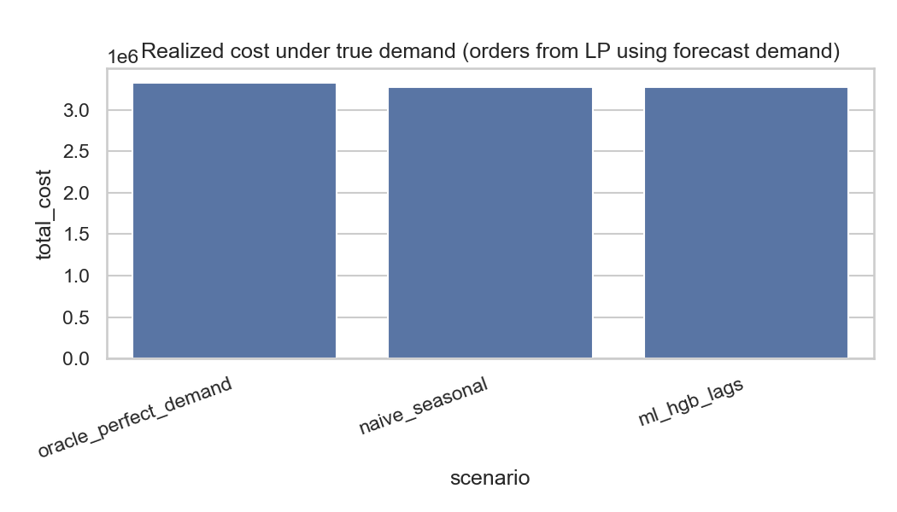

Engineering Systems Design Report
Predict-then-optimize inventory pipeline · UCI Online Retail weekly panel · realized KPIs under true demand
Purpose. Satisfy engineering review-style documentation: problem, stakeholders, requirements with traceability, architecture, detailed design (data, forecasts, LP, simulation), results, sensitivity, risks, and reproducibility.
Outcomes (this build).
Retail and distribution systems must place replenishment orders before demand is realized. Decisions are informed by forecasts, yet performance is judged on outcomes under true demand. This report documents a decomposed system: forecasting, linear optimization with service and capacity constraints, and ex-post simulation for realized cost and fill.
The need is traceable evidence of how forecast-driven plans behave relative to a perfect-foresight benchmark, including sensitivity to demand scale, under explicit unit economics and capacity limits.
Actors: a planner chooses periodic replenishment orders subject to a warehouse capacity. Customers draw true demand; the planner only sees history when fitting forecasts. Feedback is monetary: holding, variable ordering, fixed ordering (in simulation), and stockouts.
| Stakeholder / role | Need |
|---|---|
| Planner / operations | Periodic replenishment under warehouse capacity; minimize holding, variable ordering, and shortage costs in the LP; evaluate with full cost stack in simulation. |
| Service policy owner | Aggregate fill target on planning demand at least 95% (configurable τ). |
| Analysis and audit | Documented LP, open-source CBC solver, single-notebook implementation for traceability. |
| ID | Requirement | Verification |
|---|---|---|
| FR-1 | Multi-SKU, multi-period inventory balance with nonnegative orders, inventory, and shortages. | Notebook `solve_inventory_lp` balance rows |
| FR-2 | Minimum aggregate fill on planning demand: total shortage ≤ (1−τ) × total planning demand, τ = 95%. | LP aggregate shortage constraint |
| FR-3 | Total order quantity per period ≤ 800 units (all SKUs combined). | LP capacity constraint per t |
| NFR-1 | No commercial solver dependency. | PuLP + CBC |
| Requirement | Design element in implementation |
|---|---|
| FR-1 | `solve_inventory_lp`: per (t,s) balance I_end = I_prev + x − d_plan + u; u ≤ d_plan. |
| FR-2 | Single row: Σ u ≤ (1−0.95) × Σ d_plan over test horizon. |
| FR-3 | Per period: Σ_s x[t,s] ≤ order_capacity_per_period. |
| NFR-1 | `pl.PULP_CBC_CMD` in notebook. |
Loaded from config/costs.yaml and passed into both the LP and the rolling simulation.
| Parameter | Value |
|---|---|
holding_per_unit_period |
0.25 |
ordering_variable_per_unit |
1.0 |
ordering_fixed_per_order |
15.0 |
stockout_penalty_per_unit |
8.0 |
order_capacity_per_period |
800 |
initial_inventory |
5.0 |
The system is decomposed into three subsystems. Information flows one way into the LP at decision time; truth enters only in the evaluation module (or inside the LP for the oracle benchmark).
| Subsystem | Function |
|---|---|
| Prediction | Seasonal naive and lag-feature gradient boosting produce test-horizon planning demand matrices. |
| Optimization | A multi-SKU LP minimizes holding plus variable ordering plus shortage penalties with aggregate fill and per-period capacity. |
| Evaluation | Oracle uses truth in the LP; forecast scenarios use d_hat in the LP, then simulate realized cost and fill under true demand with fixed orders. |
The planner never observes future true demand when choosing orders; the evaluation module observes truth only after plans are fixed.
Training-period demand history
│
▼
┌────────────────────┐ planning demand d_plan
│ Forecast subsystem │ (d_hat from naive or ML, or d_true for oracle)
└─────────┬──────────┘
│
▼
┌────────────────────┐ orders x[t,s] ≥ 0
│ LP (CBC) │ min Σ (h·I + c_var·x + c_short·u)
│ min cost │ s.t. balance, capacity, aggregate fill on d_plan
└─────────┬────────┘
│
▼
┌────────────────────┐ true demand d_true (test horizon)
│ Simulation / KPIs │ realized cost (incl. fixed order cost), fill rate
└────────────────────┘
Real transaction data from the UCI Online Retail repository are downloaded once to `data/raw/`, read with `openpyxl`, filtered to positive quantities, and aggregated to calendar-week units sold per `StockCode`. The top SKUs by total volume are retained, weeks are sorted and indexed 0…T−1, and the panel is expressed in long form then pivoted to wide for modeling. Missing SKU-week pairs are treated as zero demand in the wide matrix.
Both methods produce a nonnegative matrix d_hat of the same shape as planning demand on the test horizon.
The optimization layer is a linear program over the test horizon indices present in the planning demand matrix. Indices t and s refer to period and SKU; d_plan[t,s] is the planning demand (forecast or truth).
| Element | Specification (implementation) |
|---|---|
| Decision variables | x[t,s] ≥ 0 order quantity; I_end[t,s] ≥ 0 end-of-period inventory; u[t,s] ≥ 0 shortage (unmet demand in the LP accounting). |
| Objective | Minimize Σ_{t,s} ( h·I_end + c_var·x + c_short·u ) using `holding_per_unit_period`, `ordering_variable_per_unit`, `stockout_penalty_per_unit` from config. |
| Inventory balance | I_end[t,s] = I_prev + x[t,s] − d_plan[t,s] + u[t,s]; first period uses `initial_inventory` per SKU. |
| Local shortage bound | u[t,s] ≤ d_plan[t,s] for each (t,s). |
| Order capacity | Σ_s x[t,s] ≤ order_capacity_per_period for each t. |
| Aggregate service | Sum over all (t,s) of u ≤ (1−τ) × sum of d_plan with τ = 0.95 (minimum fill on planning demand). |
The aggregate constraint limits total **planned** shortage relative to total **planning** demand. It does not bound realized shortage against true demand; hence realized fill rate in §6 can differ sharply from τ when d_plan and d_true disagree.
Given fixed orders from the LP, the simulator steps through periods with true demand and accumulates costs. Fixed ordering cost per positive order is included here but not in the LP objective.
| Metric | Definition |
|---|---|
| Realized total cost | Roll forward with true demand: end-of-period holding at rate h, variable cost c_var per unit ordered, stockout penalty c_short per unmet unit, plus fixed cost 15.0 per (t,s) when x[t,s] > 0. Same orders as the LP output. |
| Realized fill rate | (Total true demand − total unmet demand) / total true demand over the simulated horizon, with unmet demand computed period by period from inventory and orders. |
Orders are chosen by solving the LP on planning demand (forecast, or true demand for the oracle benchmark). The tables below report KPIs from simulation against true test demand.
| Scenario | Realized total cost | Realized fill rate |
|---|---|---|
| oracle_perfect_demand | 3328858.25 | 0.0270 |
| naive_seasonal | 3271715.00 | 0.0422 |
| ml_hgb_lags | 3274647.89 | 0.0400 |
Numerical results: oracle realized cost 3,328,858.25 (fill 0.0270); naive 3,271,715.00 (-1.72% vs oracle, fill 0.0422); ML 3,274,647.89 (-1.63% vs oracle, fill 0.0400). Both forecast-driven plans achieve lower **simulated** total cost than the oracle in this build. Interpret this as an objective mismatch: the LP minimizes linear holding, variable ordering, and shortage costs without fixed ordering charges, while the simulator adds fixed costs per placement. The oracle LP is still optimal for its stated LP objective on planning demand; it is not guaranteed to minimize the simulator’s objective. Realized fill rates remain well below τ=95% because τ constrains the LP on planning demand, not on out-of-sample truth.

A stress test scales **true** demand by a multiplier while holding the order plan from the naive forecast LP at multiplier 1.0. This isolates exposure to demand level misspecification without re-solving the optimization or re-estimating forecasts.
| Demand multiplier | Realized total cost | Realized fill rate |
|---|---|---|
| 0.9 | 2945405.70 | 0.0434 |
| 1.0 | 3271715.00 | 0.0422 |
| 1.1 | 3599179.23 | 0.0410 |
The following items are limitations of the current model and study design, stated as risks with mitigations or research extensions.
| Risk or limitation | Mitigation or extension |
|---|---|
| LP omits binary fixed-order decisions; fixed costs appear only in simulation. | Compare KPIs under simulation consistently; consider MIP or fixed-cost proxies if decisions hinge on order counts. |
| Single temporal train or test split. | Rolling-origin evaluation across multiple cutoffs; bootstrap by SKU where appropriate. |
| Recursive point forecasts; no uncertainty sets in the LP. | Scenario trees, robust optimization, or chance constraints as follow-on work. |
| Real data are aggregated and cleaned; not a live retailer feed. | Treat as illustrative; validate on domain-specific data before operational use. |
The documented system separates forecasting, LP-based planning, and simulation-based evaluation. Under the committed parameters, realized cost and fill illustrate predict-then-optimize effects: planning service level does not translate directly to realized fill, and LP-optimal plans need not minimize simulated cost when the simulator adds cost terms absent from the LP.
Recommendations.
Create a venv, pip install -r requirements.txt, run all cells in optimization_ml_hybrid_walkthrough.ipynb, then run this script. Figures and CSVs under outputs/ must exist for a full regeneration.